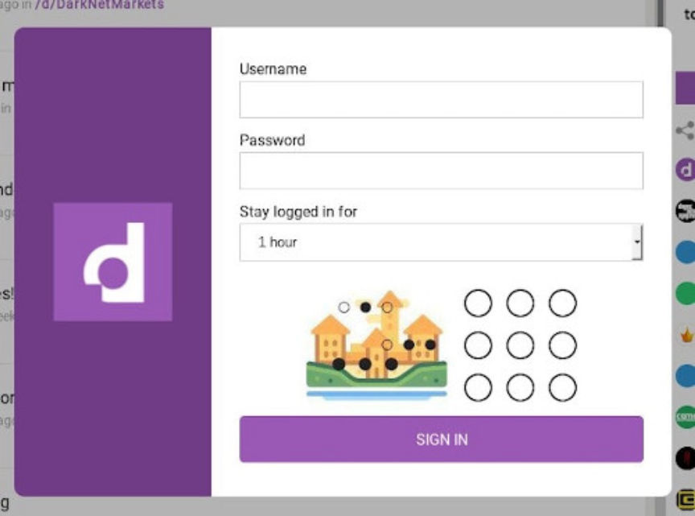
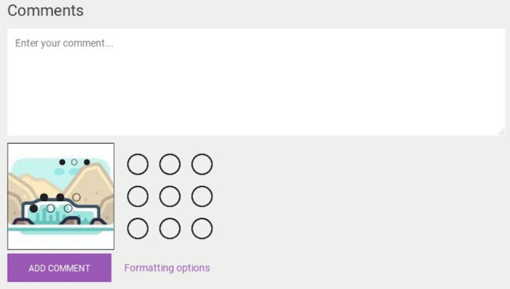
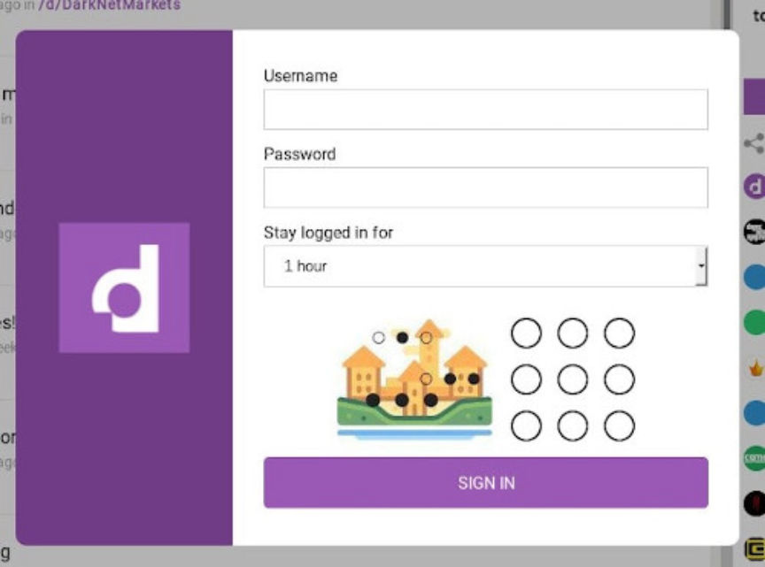
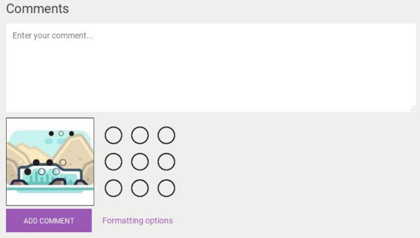

Dread is Back Online with New Methods to Fight Spam
~4 min read | Published on 2019-10-01, tagged Dread using 814 words.
The administrator of Dread opened the forum back up for users after adding measures to prevent bots, automated spam, and vote manipulation on comments and posts. The forum will receive another update at some point within the next week that will bring additional features and stability to the platform, HugBunter said.
More than a week ago, HugBunter put Dread into maintenance mode to push an update that would “provide increased stability as the platform” and “reduce a whole lot of spam and phishing.” Among other things, the update was designed to fix the constant spam that had flooded the front-page and popular subdreads. According to the signed message from HugBunter, the update would have taken less than a day.
After the Dread staff member “Paris” had not heard from HugBunter in three days, they posted a notice on the front-page of Dread about the activation of HugBunter’s deadman switch. The switch, according to a post from Paris on the darkweb forum Envoy, was only triggered by a lack of communication from HugBunter and not something more serious. Paris wrote that if HugBunter failed to return within one week of the announcement, they would release the Dread source code.
HugBunter showed up only a few days after Paris’ message. He said that he had finished implementing a new captcha that would put an end to automated account registration and added global auto-mod functionality for additional spam control.
Users will immediately spot the captcha change as well as the lack of gibberish comments cluttering every post. The complete message is below. The message is signed on Dread at this link.
Welcome back!
So first of all, I will not be discussing the reasoning behind my absense for obvious reasons, however it was out of my control and extremely unfortunate to occurr during the site being in maintenance mode. I’d like to thanks Paris for handling the situation to the best of his ability and as instructed if I wasn’t around to provide proof of life. He has proven that he will follow the instructions of continuance planning if I was ever to be gone.
I’d like to apologize for the downtime, the maintenance was intended to only be 24-48 hours maximum and due to the issues I have experienced I was unable to continue work on the planned huge update to ensure stability going forward, a restructure is needed for the platform pretty urgently, so I will try to have that ready by next week if possible. In the mean time, the platform has been updated with minimal changes that were planned for this, simply to combat the huge spam wave we experienced prior to the downtime and I have also provided some small bug fixes. I won’t go into detail regarding spam protections as it will only speed up any potential bypasses, so will list below a simplified change log.
- - Custom built interactive captcha, which has been tremendously buggy, but should be fine now afaik, please report any issues.
- - Content restrictions for certain accounts which become quarantined via new spam filters.
- - Global Automod entries (Send any suggestions for global filters via modmail).
- - Minor Automod fixes
- - Private/Invite-only subdreads now have their content restricted from the search to members only.
- - Captcha required for adding parent comments
- - Captcha required for child comments on a case by case basis
- - New tools for Dread staff to play with to help in reducing spam and malicious accounts
- - Some changes to the voting system to reduce manipulation and score attacks, this will be furthered later today with extra hot fixes I’ll be working on.
Probably a couple more but I’m tired.
Last thing I’d like to say is that I am sincerely sorry to anyone who hasn’t rubbed one out for the last few days awaiting the Dread source code to be released. Unfortunately, since the site will be continuing where we left of, that will not happen for the time being. It is definitely not ready to become open source, at least until the stability issues are resolved and the codebase is cleaned up, but I do intend to stick to the promise of releasing it, it just needs to be when I am ready to do so. Hopefully this incident will reassure that the source code can and will however be released, should anything happen to me. I will try to ensure this doesn’t occur again, although it was out of my control, it is unacceptable so I will be thinking of better measures to put in place in the future. I’m going to be enforcing a canary update during my login process to keep it consistently updated from here.
Thanks for your understanding and it has been great to catch up on the latest conspiracies, especially that of my buddy GP’s, you go girl!
Dread is accessible at the usual address: dreadditevelidot.onion
More than a week ago, HugBunter put Dread into maintenance mode to push an update that would “provide increased stability as the platform” and “reduce a whole lot of spam and phishing.” Among other things, the update was designed to fix the constant spam that had flooded the front-page and popular subdreads. According to the signed message from HugBunter, the update would have taken less than a day.
The New Captcha on Dread
After the Dread staff member “Paris” had not heard from HugBunter in three days, they posted a notice on the front-page of Dread about the activation of HugBunter’s deadman switch. The switch, according to a post from Paris on the darkweb forum Envoy, was only triggered by a lack of communication from HugBunter and not something more serious. Paris wrote that if HugBunter failed to return within one week of the announcement, they would release the Dread source code.
HugBunter showed up only a few days after Paris’ message. He said that he had finished implementing a new captcha that would put an end to automated account registration and added global auto-mod functionality for additional spam control.
The New Comment Captcha on Dread
Users will immediately spot the captcha change as well as the lack of gibberish comments cluttering every post. The complete message is below. The message is signed on Dread at this link.
Welcome back!
So first of all, I will not be discussing the reasoning behind my absense for obvious reasons, however it was out of my control and extremely unfortunate to occurr during the site being in maintenance mode. I’d like to thanks Paris for handling the situation to the best of his ability and as instructed if I wasn’t around to provide proof of life. He has proven that he will follow the instructions of continuance planning if I was ever to be gone.
I’d like to apologize for the downtime, the maintenance was intended to only be 24-48 hours maximum and due to the issues I have experienced I was unable to continue work on the planned huge update to ensure stability going forward, a restructure is needed for the platform pretty urgently, so I will try to have that ready by next week if possible. In the mean time, the platform has been updated with minimal changes that were planned for this, simply to combat the huge spam wave we experienced prior to the downtime and I have also provided some small bug fixes. I won’t go into detail regarding spam protections as it will only speed up any potential bypasses, so will list below a simplified change log.
- - Custom built interactive captcha, which has been tremendously buggy, but should be fine now afaik, please report any issues.
- - Content restrictions for certain accounts which become quarantined via new spam filters.
- - Global Automod entries (Send any suggestions for global filters via modmail).
- - Minor Automod fixes
- - Private/Invite-only subdreads now have their content restricted from the search to members only.
- - Captcha required for adding parent comments
- - Captcha required for child comments on a case by case basis
- - New tools for Dread staff to play with to help in reducing spam and malicious accounts
- - Some changes to the voting system to reduce manipulation and score attacks, this will be furthered later today with extra hot fixes I’ll be working on.
Probably a couple more but I’m tired.
Last thing I’d like to say is that I am sincerely sorry to anyone who hasn’t rubbed one out for the last few days awaiting the Dread source code to be released. Unfortunately, since the site will be continuing where we left of, that will not happen for the time being. It is definitely not ready to become open source, at least until the stability issues are resolved and the codebase is cleaned up, but I do intend to stick to the promise of releasing it, it just needs to be when I am ready to do so. Hopefully this incident will reassure that the source code can and will however be released, should anything happen to me. I will try to ensure this doesn’t occur again, although it was out of my control, it is unacceptable so I will be thinking of better measures to put in place in the future. I’m going to be enforcing a canary update during my login process to keep it consistently updated from here.
Thanks for your understanding and it has been great to catch up on the latest conspiracies, especially that of my buddy GP’s, you go girl!
Dread is accessible at the usual address: dreadditevelidot.onion